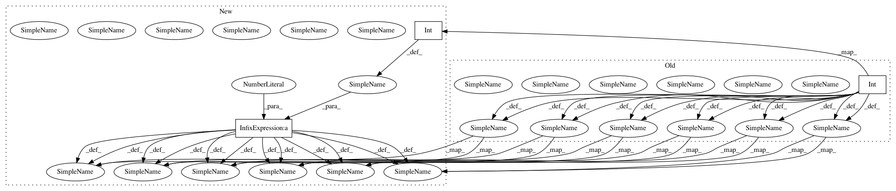

597ae33645d1a8a0e2e87e8bec05232594d5c447,pyAudioAnalysis/ShortTermFeatures.py,,chromagram,#,305
Before Change
cur_position = 0
count_fr = 0
num_fft = int(window / 2)
chromogram = np.zeros((int((num_samples-step-window) / step), 12),
dtype=np.float64)
while cur_position + window - 1 < num_samples:
count_fr += 1
x = signal[cur_position:cur_position + window]
cur_position = cur_position + step
X = abs(fft(x))
X = X[0:num_fft]
X = X / len(X)
chroma_names, chroma_feature_matrix = chroma_features(X, sampling_rate,
num_fft)
chroma_feature_matrix = chroma_feature_matrix[:, 0]
chromogram[count_fr-1, :] = chroma_feature_matrix.T
freq_axis = chroma_names
time_axis = [(t * step) / sampling_rate
for t in range(chromogram.shape[0])]
if plot:
fig, ax = plt.subplots()
chromogram_plot = chromogram.transpose()[::-1, :]
ratio = int(chromogram_plot.shape[1] / (3 * chromogram_plot.shape[0]))
if ratio < 1:
ratio = 1
chromogram_plot = np.repeat(chromogram_plot, ratio, axis=0)
imgplot = plt.imshow(chromogram_plot)
ax.set_yticks(range(int(ratio / 2), len(freq_axis) * ratio, ratio))
ax.set_yticklabels(freq_axis[::-1])
After Change
num_samples = len(signal) // total number of signals
count_fr = 0
num_fft = int(window / 2)
chromogram = np.zeros((int((num_samples-step-window) / step) + 1, 12),
dtype=np.float64)
for cur_p in tqdm(range(window, num_samples - step, step),
disable=not show_progress):
count_fr += 1
x = signal[cur_p:cur_p + window]
X = abs(fft(x))
X = X[0:num_fft]
X = X / len(X)
chroma_names, chroma_feature_matrix = chroma_features(X, sampling_rate,
num_fft)
chroma_feature_matrix = chroma_feature_matrix[:, 0]
chromogram[count_fr-1, :] = chroma_feature_matrix.T
freq_axis = chroma_names
time_axis = [(t * step) / sampling_rate
for t in range(chromogram.shape[0])]
if plot:
fig, ax = plt.subplots()
chromogram_plot = chromogram.transpose()[::-1, :]
ratio = int(chromogram_plot.shape[1] / (3 * chromogram_plot.shape[0]))
if ratio < 1:
ratio = 1
chromogram_plot = np.repeat(chromogram_plot, ratio, axis=0)
imgplot = plt.imshow(chromogram_plot)
ax.set_yticks(range(int(ratio / 2), len(freq_axis) * ratio, ratio))
ax.set_yticklabels(freq_axis[::-1])
In pattern: SUPERPATTERN
Frequency: 3
Non-data size: 3
Instances
Project Name: tyiannak/pyAudioAnalysis
Commit Name: 597ae33645d1a8a0e2e87e8bec05232594d5c447
Time: 2020-06-13
Author: tyiannak@gmail.com
File Name: pyAudioAnalysis/ShortTermFeatures.py
Class Name:
Method Name: chromagram
Project Name: tyiannak/pyAudioAnalysis
Commit Name: 597ae33645d1a8a0e2e87e8bec05232594d5c447
Time: 2020-06-13
Author: tyiannak@gmail.com
File Name: pyAudioAnalysis/ShortTermFeatures.py
Class Name:
Method Name: spectrogram
Project Name: neurodsp-tools/neurodsp
Commit Name: 39083a5b4ed00c0263e6a5fb4c519f178627de30
Time: 2019-04-07
Author: tdonoghue@ucsd.edu
File Name: neurodsp/sim/aperiodic.py
Class Name:
Method Name: sim_powerlaw